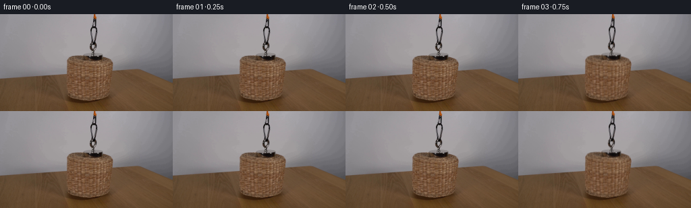
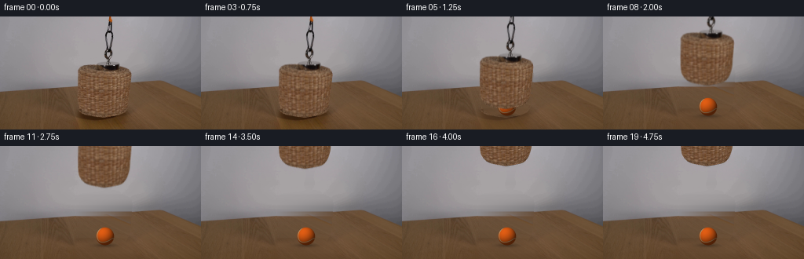

CODING AGENTS AS PIXEL WORLD MODELS
traex/GPT-6.1-Sol · 0169
点击播放 · 原生 RGB 像素
逐轮保存的候选
回放视频、检查图与代码变化。
每份候选均可单独播放。实际图片检查记录在下方工具轨迹中。
候选 01播放与检查图
点击播放 · 原生 RGB 像素

展开代码变化
--- 上一保存版本
+++ 本次保存版本
@@ -0,0 +1,172 @@
+from pathlib import Path
+import numpy as np
+from PIL import Image, ImageDraw
+from scipy.ndimage import gaussian_filter, map_coordinates
+from scipy.interpolate import PchipInterpolator
+import cv2
+import artifact_io
+
+ROOT=Path(__file__).resolve().parent
+H,W=144,256
+I=np.array(Image.open(ROOT/'first_frame.png').convert('RGB'))
+im=I.astype(np.float64)
+y,x=np.mgrid[:H,:W].astype(float)
+rng=np.random.default_rng(27)
+
+# A matte following the photographed wicker's rounded outline.
+def outline_mask():
+ left=np.array([[61.0,114.0],[62,105.6],[64,101.8],[66,100.2],[68,99.0],[71,98.8],[77,98.8],[84,98.8],[91,99],[100,99.1],[108,99.5],[114,100.8],[118,103.3],[122,107.1],[125,113],[127,122],[128.7,132.3]])
+ right=np.array([[61,123.5],[62,152.7],[64,157.4],[66,161.9],[68,165.0],[71,166.5],[75,167],[79,166.7],[85,166.3],[94,165.5],[104,164.8],[111,163.2],[116,161.2],[120,158.8],[123,156],[125,151.5],[127,142.7],[128.7,132.3]])
+ yy=np.linspace(61,128.7,350)
+ lx=PchipInterpolator(left[:,0],left[:,1])(yy)
+ rx=PchipInterpolator(right[:,0],right[:,1])(yy)
+ poly=list(zip(lx,yy))+list(zip(rx[::-1],yy[::-1]))
+ S=8
+ m=Image.new('L',(W*S,H*S));d=ImageDraw.Draw(m)
+ d.polygon([(int(round(a*S)),int(round(b*S))) for a,b in poly],fill=255)
+ return np.array(m.resize((W,H),Image.Resampling.LANCZOS)).astype(float)/255
+basket=outline_mask()
+
+# Photographic background extrapolation, using only visible wall and wood.
+wall=im.copy()
+for j in range(H):
+ la=im[j,91:97].mean(0); rb=im[j,172:178].mean(0)
+ u=np.clip((np.arange(W)-96)/77,0,1)
+ vals=la[None]*(1-u[:,None])+rb[None]*u[:,None]
+ # Smooth middle of the existing grey backdrop.
+ vals+=2.2*np.sin(np.pi*u)[:,None]
+ wall[j]=vals
+# Smooth lateral texture interpolation gives the obscured strip a natural wood grain.
+wood=im.copy()
+for j in range(H):
+ la=im[j,87:96].mean(0); rb=im[j,176:187].mean(0)
+ u=np.clip((np.arange(W)-95)/80,0,1)
+ color=la[None]*(1-u[:,None])+rb[None]*u[:,None]
+ # At the front, the original basket's shadow spills past these samples;
+ # draw on farther wood instead there.
+ if j>=117:
+ ls=im[j,71:86].mean(0);rs=im[j,179:197].mean(0)
+ v=np.clip((np.arange(W)-80)/108,0,1)
+ color=ls[None]*(1-v[:,None])+rs[None]*v[:,None]
+ tex=im[j,np.clip(np.arange(W)+83,0,W-1).astype(int)]
+ texs=gaussian_filter(im[j],sigma=(6,0))[np.clip(np.arange(W)+83,0,W-1).astype(int)]
+ wood[j]=color+(tex-texs)*.60
+# Linear table rear edge, consistent with the visible edges on both sides.
+edge=96.5-.074*x
+mix=np.clip((y-edge+.6)/1.4,0,1)
+fill=wall*(1-mix[...,None])+wood*mix[...,None]
+# Matte of the chain and the small silver magnetic attachment. Preserve holes.
+chain=np.zeros((H,W))
+for j in range(0,62):
+ bg=(im[j,129:132].mean(0)+im[j,146:149].mean(0))/2
+ dif=np.sqrt(((im[j]-bg)**2).mean(-1))
+ a=np.clip((dif-3.5)/17,0,1)
+ chain[j,132:146]=a[132:146]
+# Grey disc immediately above the wicker, including its edge.
+for j in range(56,63):
+ a=np.clip((wall[j].mean(-1)-im[j].mean(-1)-3)/22,0,1)
+ chain[j,120:154]=np.maximum(chain[j,120:154],a[120:154])
+alpha=np.maximum(basket,chain)
+# The local background used for unmatting wall edges must match the original.
+edge_bg=fill.copy()
+for j in range(62):
+ for k in range(132,146):
+ edge_bg[j,k]=(im[j,130]+im[j,147])/2
+# Slightly expand the fill region without altering distant table/wall.
+clean=im.copy()
+remove=cv2.dilate((alpha>.03).astype(np.uint8),np.ones((3,3),np.uint8)).astype(float)
+remove=gaussian_filter(remove,.45)
+clean=im*(1-remove[...,None])+fill*remove[...,None]
+# Separate the original cast shadow beneath the basket from the foreground.
+sh_region=np.clip((x-90)/8,0,1)*np.clip((176-x)/9,0,1)*np.clip((y-114)/8,0,1)
+sh_region*=1-alpha
+# Include the soft reddish shadow extending to the front of the table.
+clean=clean*(1-sh_region[...,None])+wood*sh_region[...,None]
+shadow_delta=(im-clean)*(1-alpha[...,None])
+# Premultiplied foreground; edge decontamination is limited to antialias pixels.
+premult=im*alpha[...,None]
+partial=(alpha>0)&(alpha<1)
+premult[partial]=im[partial]-edge_bg[partial]*(1-alpha[partial,None])
+premult=np.clip(premult,0,255*alpha[...,None])
+
+# Render the orange felt tennis ball on the wood, with a curved pale seam.
+S=4
+Y,X=np.mgrid[:H*S,:W*S].astype(float)
+X=(X+.5)/S-.5;Y=(Y+.5)/S-.5
+cx,cy,rad=133.4,114.6,11.4
+nx=(X-cx)/rad;ny=(Y-cy)/rad
+rr=nx*nx+ny*ny
+nz=np.sqrt(np.maximum(0,1-rr))
+light=np.array([-.40,-.57,.78]); light/=np.linalg.norm(light)
+shade=np.maximum(0,nx*light[0]+ny*light[1]+nz*light[2])
+base=np.array([219,91,19.5])
+ball=base[None,None,:]*(.36+.67*shade[...,None])
+ball+=np.maximum(0,nz)**5[...,None] if False else 0
+# Fine felt changes are fixed on the stationary sphere.
+noise=rng.normal(0,1.45,(H*S,W*S))
+ball+=noise[...,None]*np.array([1.2,.8,.5])
+# A closed wavy great-circle-style tennis seam on a spherical surface.
+t=np.linspace(0,2*np.pi,2400)
+z0=.48*np.sin(2*t)
+r0=np.sqrt(1-z0*z0)
+p=np.array([r0*np.cos(t),r0*np.sin(t),z0])
+def rot(a,axis):
+ c,s=np.cos(a),np.sin(a)
+ if axis==0:return np.array([[1,0,0],[0,c,-s],[0,s,c]])
+ if axis==1:return np.array([[c,0,s],[0,1,0],[-s,0,c]])
+ return np.array([[c,-s,0],[s,c,0],[0,0,1]])
+p=rot(.35,2)@rot(.4,1)@rot(1.03,0)@p
+seam_img=Image.new('L',(W*S,H*S));d=ImageDraw.Draw(seam_img)
+seg=[]
+for a,b,c in p.T:
+ if c>=.025:
+ seg.append(((cx+rad*a+.5)*S,(cy+rad*b+.5)*S))
+ else:
+ if len(seg)>1:d.line(seg,fill=255,width=3)
+ seg=[]
+if len(seg)>1:d.line(seg,fill=255,width=3)
+sm=gaussian_filter(np.array(seam_img)/255,.7)
+seamcol=np.array([194,170,126])[None,None,:]*(.43+.59*shade[...,None])
+ball=ball*(1-sm[...,None])+seamcol*sm[...,None]
+ba=(rr<=1).astype(float)
+ball_rgb=cv2.resize((ball*ba[...,None]).astype(np.float32),(W,H),interpolation=cv2.INTER_AREA)
+ball_a=cv2.resize(ba.astype(np.float32),(W,H),interpolation=cv2.INTER_AREA)
+# Ground-contact shadow belongs to the ball, not the lifted basket.
+ballshadow=np.exp(-((x-cx)/12.9)**2-((y-126.1)/2.25)**2)*.31
+
+def transform(arr,dx,dy,angle=0):
+ c,s=np.cos(angle),np.sin(angle)
+ # Rigid motion about the center of the magnet, in a fixed camera.
+ xx=x-dx-138; yy=y-dy-62
+ sx=c*xx+s*yy+138;sy=-s*xx+c*yy+62
+ if arr.ndim==2:return map_coordinates(arr,[sy,sx],order=1,mode='constant',cval=0)
+ return np.stack([map_coordinates(arr[...,k],[sy,sx],order=1,mode='constant',cval=0) for k in range(3)],axis=-1)
+
+def smooth(u):
+ u=np.clip(u,0,1);return u*u*(3-2*u)
+frames=[I.copy()]
+for f in range(1,20):
+ t=f/4
+ # Begins covered, pauses briefly, then rises steadily without cuts.
+ h=103*smooth((t-.60)/3.25)
+ dx=.6*np.sin(t*2.8)*np.sin(np.pi*min(1,h/103))
+ dy=-h
+ angle=.007*np.sin(t*3.1)*np.sin(np.pi*min(1,h/103))
+ ground=np.exp(-h/15)
+ fr=clean+shadow_delta*ground
+ # A broad cast shadow weakens and softens with increasing height.
+ sh=np.exp(-((x-(134+h*.055))/(29+h*.10))**2-((y-126)/(5+h*.04))**2)
+ fr*=1-(.075*(1-ground)*np.exp(-h/62)*sh)[...,None]
+ fr*=1-(ballshadow*(1-np.exp(-h/6)))[...,None]
+ fr=fr*(1-ball_a[...,None])+ball_rgb
+ ma=transform(alpha,dx,dy,angle)
+ fg=transform(premult,dx,dy,angle)
+ fr=fr*(1-ma[...,None])+fg
+ frames.append(np.clip(np.rint(fr),0,255).astype(np.uint8))
+frames=np.stack(frames)
+# Required first frame is the untouched input.
+frames[0]=I
+artifact_io.save(frames,ROOT)
+np.save(ROOT/'.tmp'/'candidate.npy',frames)
+Image.fromarray(np.clip(clean,0,255).astype(np.uint8)).save(ROOT/'.tmp'/'background.png')
+Image.fromarray((alpha*255).astype(np.uint8)).save(ROOT/'.tmp'/'matte.png')
候选 02播放与检查图
点击播放 · 原生 RGB 像素

展开代码变化
--- 上一保存版本
+++ 本次保存版本
@@ -101,7 +101,6 @@
shade=np.maximum(0,nx*light[0]+ny*light[1]+nz*light[2])
base=np.array([219,91,19.5])
ball=base[None,None,:]*(.36+.67*shade[...,None])
-ball+=np.maximum(0,nz)**5[...,None] if False else 0
# Fine felt changes are fixed on the stationary sphere.
noise=rng.normal(0,1.45,(H*S,W*S))
ball+=noise[...,None]*np.array([1.2,.8,.5])
@@ -128,7 +127,8 @@
sm=gaussian_filter(np.array(seam_img)/255,.7)
seamcol=np.array([194,170,126])[None,None,:]*(.43+.59*shade[...,None])
ball=ball*(1-sm[...,None])+seamcol*sm[...,None]
-ba=(rr<=1).astype(float)
+felt_edge=gaussian_filter(rng.normal(0,1,(H*S,W*S)),1.2)
+ba=(rr<=1+felt_edge*.012).astype(float)
ball_rgb=cv2.resize((ball*ba[...,None]).astype(np.float32),(W,H),interpolation=cv2.INTER_AREA)
ball_a=cv2.resize(ba.astype(np.float32),(W,H),interpolation=cv2.INTER_AREA)
# Ground-contact shadow belongs to the ball, not the lifted basket.
@@ -159,8 +159,15 @@
fr*=1-(.075*(1-ground)*np.exp(-h/62)*sh)[...,None]
fr*=1-(ballshadow*(1-np.exp(-h/6)))[...,None]
fr=fr*(1-ball_a[...,None])+ball_rgb
- ma=transform(alpha,dx,dy,angle)
- fg=transform(premult,dx,dy,angle)
+ # Short real-camera exposure: only moving apparatus receives motion blur.
+ u=np.clip((t-.60)/3.25,0,1)
+ speed=103*6*u*(1-u)/3.25
+ exposure=.024
+ ma=np.zeros_like(alpha)
+ fg=np.zeros_like(premult)
+ for q in [-.5,0,.5]:
+ ma+=transform(alpha,dx,dy+q*speed*exposure,angle)/3
+ fg+=transform(premult,dx,dy+q*speed*exposure,angle)/3
fr=fr*(1-ma[...,None])+fg
frames.append(np.clip(np.rint(fr),0,255).astype(np.uint8))
frames=np.stack(frames)
可观测工具轨迹
实际执行的命令与返回图片。
命令 1exit 0
/bin/bash -lc 'ls -la && cat prompt.txt && cat GENERATION_RULES.md'
命令 2exit 0
/bin/bash -lc "cat artifact_io.py && python - <<'PY'
from PIL import Image
import numpy as np
im=np.array(Image.open('first_frame.png')); print(im.shape)
for y in range(0,144,4):
s=''
for x in range(0,256,4):
r,g,b=np.mean(im[y:y+4,x:x+4],axis=(0,1)); l=(r+g+b)/3
if r>g*1.5 and r>b*1.5: c='O'
elif r>g*1.2 and g>b*1.2:c='w'
elif l<35:c='#'
elif l<75:c='8'
elif l<110:c='o'
elif l<145:c=':'
elif l<180:c='.'
elif l<220:c='-'
else:c=' '
s+=c
print(f'{y:03}',s)
PY"命令 3exit 0
/bin/bash -lc "python - <<'PY'
from PIL import Image
import numpy as np
from scipy.cluster.vq import kmeans2
im=np.array(Image.open('first_frame.png')); centers,labels=kmeans2(im.reshape(-1,3).astype(float),18,minit='++',seed=11)
cs=sorted(range(18),key=lambda i: centers[i].mean());chars=' .,:;-~+oxwW*O#X%@'
chars='abcdefghijklmnopqr'; cmap={i:chars[j] for j,i in enumerate(cs)}
for i in cs:print(cmap[i],np.round(centers[i],1),sum(labels==i))
for y in range(0,144,2):
vals=im[y:y+2].reshape(2,128,2,3).mean((0,2)); idx=((vals[:,None,:]-centers[None,:,:])**2).sum(-1).argmin(1)
print('%03d'%y,''.join(cmap[k] for k in idx))
PY"命令 4exit 0
/bin/bash -lc "python - <<'PY'
from PIL import Image
import numpy as np
im=np.array(Image.open('first_frame.png'))
for y in [0,6,18,40,56,59,60,61,62,64,66,68,70,75,80,85,90,95,100,105,110,115,120,122,124,126,128,130,132,134,136,138,140]:
print('\\ny',y)
print(' '.join(f'{x}:{tuple(im[y,x])}' for x in range(90,174,4)))
PY"命令 5exit 0
/bin/bash -lc "python - <<'PY'
from PIL import Image
import numpy as np
im=np.array(Image.open('first_frame.png')).astype(float)
lum=im.mean(-1); chars='@%#*+=-:. '
for y in range(52,134):
print(f'{y:03} '+''.join(chars[min(9,int(v/18))] for v in lum[y,92:176]))
print('COLOR CHROMA')
for y in range(54,133):
s=''
for r,g,b in im[y,92:176]:
if r-g>32 and g-b>20: c='T'
elif r-g>18 and g-b>12:c='w'
elif max(r,g,b)-min(r,g,b)<14:c='.' if g>80 else '#'
else:c='o'
s+=c
print(f'{y:03} '+s)
PY"命令 6exit 0
/bin/bash -lc "python - <<'PY'
from PIL import Image
import numpy as np
im=np.array(Image.open('first_frame.png')).astype(float)
for y in range(57,134):
a=im[y]; chrom=a[:,0]-a[:,2]
# print stretches strong color besides table, with table estimate from sides
spans=[]
hit=chrom[90:175]>25
idx=np.where(hit)[0]+90
print(y, idx.min() if len(idx) else '-',idx.max() if len(idx) else '-', ' '.join('%d:%d'%(x,int(chrom[x])) for x in [95,97,98,99,100,101,102,103,104,105,110,120,130,140,150,155,158,160,162,163,164,165,166,167,168,169,170,172]))
PY"命令 7exit 0
/bin/bash -lc "python - <<'PY'
import numpy as np
from PIL import Image
im=np.array(Image.open('first_frame.png')).astype(float)
print('wall-table boundaries per x:')
for x in list(range(0,100,5))+list(range(170,256,5)):
ch=im[:,x,0]-im[:,x,2]
inds=np.where(ch[65:110]>26)[0]+65
print(x,inds.min() if len(inds) else None,im[inds.min(),x].round().astype(int).tolist() if len(inds) else '-')
print('cord RGB x130-145 y0-59')
for y in range(0,61):
print(y,' '.join('%d:%s'%(x,','.join(map(str,im[y,x].astype(int)))) for x in range(134,145)))
PY"命令 8exit 0
/bin/bash -lc "python - <<'PY'
import numpy as np
from PIL import Image
im=np.array(Image.open('first_frame.png')).astype(float)
for y in [60,70,80,84,85,86,87,88,89,90,94,100,110,120,125,130,135,140,143]:
print(y, ' '.join('%d:%d,%d,%d'%(x,*im[y,x]) for x in [80,85,90,94,97,100,104,110,120,130,140,150,160,165,168,170,175,180,190,200,210]))
PY"命令 9exit 0
/bin/bash -lc "python - <<'PY' import importlib.util for m in ['cv2','scipy','numpy','PIL']: print(m,importlib.util.find_spec(m) is not None) PY"
命令 10exit 0
/bin/bash -lc "python - <<'PY'
import numpy as np
from PIL import Image
im=np.array(Image.open('first_frame.png')).astype(float)
# table color closeup lower silhouette deviations
for y in range(108,132):
print('%3d'%y, ' '.join('%3d'%int(im[y,x,0]) for x in range(96,171,2)))
print('edge energies:')
for y in range(85,129):
a=im[y].mean(1); print(y,[(x,round(a[x]-a[x-1],1)) for x in range(96,109)],[(x,round(a[x]-a[x-1],1)) for x in range(155,168)])
PY"命令 11exit 0
/bin/bash -lc "cat > .tmp/analyze.py <<'PY'
import numpy as np
from PIL import Image
from scipy.ndimage import gaussian_filter
im=np.array(Image.open('first_frame.png')).astype(float)
# Analyze gradients / variation across bottom of basket
for y in range(111,129):
print(y, ''.join('X' if v>3.5 else ('o' if v>2 else '.') for v in np.sqrt(gaussian_filter((im[...,0]-gaussian_filter(im[...,0],1.5))**2,.7))[y,95:170]))
PY
python .tmp/analyze.py"命令 12exit 0
/bin/bash -lc "python - <<'PY'
from PIL import Image
import numpy as np
im=np.array(Image.open('first_frame.png')).astype(float)
for y in range(55,72):
print(y,' '.join('%d:%d'%(x,im[y,x].mean()) for x in range(98,168,2)))
PY"命令 13exit 0
/bin/bash -lc "python - <<'PY'
from PIL import Image
import numpy as np
im=np.array(Image.open('first_frame.png')).astype(float)
for y in [60,65,70,75,80,85,90,100,110,120,130,140]:
print(y,' '.join('%d:%.1f'%(x,im[y,max(0,x-2):min(256,x+3)].mean()) for x in range(75,196,5)))
PY"命令 14exit 0
/bin/bash -lc "cat > generate.py <<'PY'
from pathlib import Path
import numpy as np
from PIL import Image, ImageDraw
from scipy.ndimage import gaussian_filter, map_coordinates
from scipy.interpolate import PchipInterpolator
import cv2
import artifact_io
ROOT=Path(__file__).resolve().parent
H,W=144,256
I=np.array(Image.open(ROOT/'first_frame.png').convert('RGB'))
im=I.astype(np.float64)
y,x=np.mgrid[:H,:W].astype(float)
rng=np.random.default_rng(27)
# A matte following the photographed wicker's rounded outline.
def outline_mask():
left=np.array([[61.0,114.0],[62,105.6],[64,101.8],[66,100.2],[68,99.0],[71,98.8],[77,98.8],[84,98.8],[91,99],[100,99.1],[108,99.5],[114,100.8],[118,103.3],[122,107.1],[125,113],[127,122],[128.7,132.3]])
right=np.array([[61,123.5],[62,152.7],[64,157.4],[66,161.9],[68,165.0],[71,166.5],[75,167],[79,166.7],[85,166.3],[94,165.5],[104,164.8],[111,163.2],[116,161.2],[120,158.8],[123,156],[125,151.5],[127,142.7],[128.7,132.3]])
yy=np.linspace(61,128.7,350)
lx=PchipInterpolator(left[:,0],left[:,1])(yy)
rx=PchipInterpolator(right[:,0],right[:,1])(yy)
poly=list(zip(lx,yy))+list(zip(rx[::-1],yy[::-1]))
S=8
m=Image.new('L',(W*S,H*S));d=ImageDraw.Draw(m)
d.polygon([(int(round(a*S)),int(round(b*S))) for a,b in poly],fill=255)
return np.array(m.resize((W,H),Image.Resampling.LANCZOS)).astype(float)/255
basket=outline_mask()
# Photographic background extrapolation, using only visible wall and wood.
wall=im.copy()
for j in range(H):
la=im[j,91:97].mean(0); rb=im[j,172:178].mean(0)
u=np.clip((np.arange(W)-96)/77,0,1)
vals=la[None]*(1-u[:,None])+rb[None]*u[:,None]
# Smooth middle of the existing grey backdrop.
vals+=2.2*np.sin(np.pi*u)[:,None]
wall[j]=vals
# Smooth lateral texture interpolation gives the obscured strip a natural wood grain.
wood=im.copy()
for j in range(H):
la=im[j,87:96].mean(0); rb=im[j,176:187].mean(0)
u=np.clip((np.arange(W)-95)/80,0,1)
color=la[None]*(1-u[:,None])+rb[None]*u[:,None]
# At the front, the original basket's shadow spills past these samples;
# draw on farther wood instead there.
if j>=117:
ls=im[j,71:86].mean(0);rs=im[j,179:197].mean(0)
v=np.clip((np.arange(W)-80)/108,0,1)
color=ls[None]*(1-v[:,None])+rs[None]*v[:,None]
tex=im[j,np.clip(np.arange(W)+83,0,W-1).astype(int)]
texs=gaussian_filter(im[j],sigma=(6,0))[np.clip(np.arange(W)+83,0,W-1).astype(int)]
wood[j]=color+(tex-texs)*.60
# Linear table rear edge, consistent with the visible edges on both sides.
edge=96.5-.074*x
mix=np.clip((y-edge+.6)/1.4,0,1)
fill=wall*(1-mix[...,None])+wood*mix[...,None]
# Matte of the chain and the small silver magnetic attachment. Preserve holes.
chain=np.zeros((H,W))
for j in range(0,62):
bg=(im[j,129:132].mean(0)+im[j,146:149].mean(0))/2
dif=np.sqrt(((im[j]-bg)**2).mean(-1))
a=np.clip((dif-3.5)/17,0,1)
chain[j,132:146]=a[132:146]
# Grey disc immediately above the wicker, including its edge.
for j in range(56,63):
a=np.clip((wall[j].mean(-1)-im[j].mean(-1)-3)/22,0,1)
chain[j,120:154]=np.maximum(chain[j,120:154],a[120:154])
alpha=np.maximum(basket,chain)
# The local background used for unmatting wall edges must match the original.
edge_bg=fill.copy()
for j in range(62):
for k in range(132,146):
edge_bg[j,k]=(im[j,130]+im[j,147])/2
# Slightly expand the fill region without altering distant table/wall.
clean=im.copy()
remove=cv2.dilate((alpha>.03).astype(np.uint8),np.ones((3,3),np.uint8)).astype(float)
remove=gaussian_filter(remove,.45)
clean=im*(1-remove[...,None])+fill*remove[...,None]
# Separate the original cast shadow beneath the basket from the foreground.
sh_region=np.clip((x-90)/8,0,1)*np.clip((176-x)/9,0,1)*np.clip((y-114)/8,0,1)
sh_region*=1-alpha
# Include the soft reddish shadow extending to the front of the table.
clean=clean*(1-sh_region[...,None])+wood*sh_region[...,None]
shadow_delta=(im-clean)*(1-alpha[...,None])
# Premultiplied foreground; edge decontamination is limited to antialias pixels.
premult=im*alpha[...,None]
partial=(alpha>0)&(alpha<1)
premult[partial]=im[partial]-edge_bg[partial]*(1-alpha[partial,None])
premult=np.clip(premult,0,255*alpha[...,None])
# Render the orange felt tennis ball on the wood, with a curved pale seam.
S=4
Y,X=np.mgrid[:H*S,:W*S].astype(float)
X=(X+.5)/S-.5;Y=(Y+.5)/S-.5
cx,cy,rad=133.4,114.6,11.4
nx=(X-cx)/rad;ny=(Y-cy)/rad
rr=nx*nx+ny*ny
nz=np.sqrt(np.maximum(0,1-rr))
light=np.array([-.40,-.57,.78]); light/=np.linalg.norm(light)
shade=np.maximum(0,nx*light[0]+ny*light[1]+nz*light[2])
base=np.array([219,91,19.5])
ball=base[None,None,:]*(.36+.67*shade[...,None])
ball+=np.maximum(0,nz)**5[...,None] if False else 0
# Fine felt changes are fixed on the stationary sphere.
noise=rng.normal(0,1.45,(H*S,W*S))
ball+=noise[...,None]*np.array([1.2,.8,.5])
# A closed wavy great-circle-style tennis seam on a spherical surface.
t=np.linspace(0,2*np.pi,2400)
z0=.48*np.sin(2*t)
r0=np.sqrt(1-z0*z0)
p=np.array([r0*np.cos(t),r0*np.sin(t),z0])
def rot(a,axis):
c,s=np.cos(a),np.sin(a)
if axis==0:return np.array([[1,0,0],[0,c,-s],[0,s,c]])
if axis==1:return np.array([[c,0,s],[0,1,0],[-s,0,c]])
return np.array([[c,-s,0],[s,c,0],[0,0,1]])
p=rot(.35,2)@rot(.4,1)@rot(1.03,0)@p
seam_img=Image.new('L',(W*S,H*S));d=ImageDraw.Draw(seam_img)
seg=[]
for a,b,c in p.T:
if c>=.025:
seg.append(((cx+rad*a+.5)*S,(cy+rad*b+.5)*S))
else:
if len(seg)>1:d.line(seg,fill=255,width=3)
seg=[]
if len(seg)>1:d.line(seg,fill=255,width=3)
sm=gaussian_filter(np.array(seam_img)/255,.7)
seamcol=np.array([194,170,126])[None,None,:]*(.43+.59*shade[...,None])
ball=ball*(1-sm[...,None])+seamcol*sm[...,None]
ba=(rr<=1).astype(float)
ball_rgb=cv2.resize((ball*ba[...,None]).astype(np.float32),(W,H),interpolation=cv2.INTER_AREA)
ball_a=cv2.resize(ba.astype(np.float32),(W,H),interpolation=cv2.INTER_AREA)
# Ground-contact shadow belongs to the ball, not the lifted basket.
ballshadow=np.exp(-((x-cx)/12.9)**2-((y-126.1)/2.25)**2)*.31
def transform(arr,dx,dy,angle=0):
c,s=np.cos(angle),np.sin(angle)
# Rigid motion about the center of the magnet, in a fixed camera.
xx=x-dx-138; yy=y-dy-62
sx=c*xx+s*yy+138;sy=-s*xx+c*yy+62
if arr.ndim==2:return map_coordinates(arr,[sy,sx],order=1,mode='constant',cval=0)
return np.stack([map_coordinates(arr[...,k],[sy,sx],order=1,mode='constant',cval=0) for k in range(3)],axis=-1)
def smooth(u):
u=np.clip(u,0,1);return u*u*(3-2*u)
frames=[I.copy()]
for f in range(1,20):
t=f/4
# Begins covered, pauses briefly, then rises steadily without cuts.
h=103*smooth((t-.60)/3.25)
dx=.6*np.sin(t*2.8)*np.sin(np.pi*min(1,h/103))
dy=-h
angle=.007*np.sin(t*3.1)*np.sin(np.pi*min(1,h/103))
ground=np.exp(-h/15)
fr=clean+shadow_delta*ground
# A broad cast shadow weakens and softens with increasing height.
sh=np.exp(-((x-(134+h*.055))/(29+h*.10))**2-((y-126)/(5+h*.04))**2)
fr*=1-(.075*(1-ground)*np.exp(-h/62)*sh)[...,None]
fr*=1-(ballshadow*(1-np.exp(-h/6)))[...,None]
fr=fr*(1-ball_a[...,None])+ball_rgb
ma=transform(alpha,dx,dy,angle)
fg=transform(premult,dx,dy,angle)
fr=fr*(1-ma[...,None])+fg
frames.append(np.clip(np.rint(fr),0,255).astype(np.uint8))
frames=np.stack(frames)
# Required first frame is the untouched input.
frames[0]=I
artifact_io.save(frames,ROOT)
np.save(ROOT/'.tmp'/'candidate.npy',frames)
Image.fromarray(np.clip(clean,0,255).astype(np.uint8)).save(ROOT/'.tmp'/'background.png')
Image.fromarray((alpha*255).astype(np.uint8)).save(ROOT/'.tmp'/'matte.png')
PY
python generate.py"命令 15exit 0
/bin/bash -lc "python - <<'PY'
import numpy as np
from PIL import Image
im=np.load('.tmp/candidate.npy')
cs='@%#*+=-:. '
for f in [1,4,8,12,16,19]:
print('FRAME',f)
for y in range(0,144,3):
arr=im[f,y:y+3].reshape(min(3,144-y),128,2,3).mean((0,2)); ss=''
for r,g,b in arr:
if r-g>65:c='O'
elif r-g>24 and g-b>16:c='w'
else: c=cs[min(9,int((r+g+b)/3/18))]
ss+=c
print('%03d'%y,ss)
PY"命令 16exit 0
/bin/bash -lc "python - <<'PY'
import numpy as np
from PIL import Image
im=np.array(Image.open('first_frame.png')).astype(float); fr=np.load('.tmp/candidate.npy')[-1].astype(float)
for y in range(30,93):
base=(fr[y,130]+fr[y,147])/2 if y<56 else (fr[y,94]+fr[y,171])/2
diff=fr[y].mean(-1)-base.mean()
ids=np.where((diff< -8)&(np.arange(256)>=98)&(np.arange(256)<168))[0]
if y<80 and len(ids):print(y,[(int(x),round(diff[x],1),fr[y,x].astype(int).tolist()) for x in ids])
print('diff 0-1 mean',abs(np.load('.tmp/candidate.npy')[1].astype(float)-im).mean())
PY"命令 17exit 0
/bin/bash -lc "python - <<'PY'
import numpy as np
from PIL import Image
im=np.array(Image.open('first_frame.png'));fr=np.load('.tmp/candidate.npy')[-1]
for yy in [39,40,41,42,43,44,45,46,47,48,49,50,51,52,53,54,55,56,57,58,59,60,61]:
a=fr[yy,126:153].mean(-1);print(yy,[(x+126,round(float(v),1)) for x,v in enumerate(a) if v<159])
# final crop ball numerical luminance
for yy in range(102,129):
a=fr[yy,119:148];print('%03d'%yy,''.join('O' if r-g>60 else 'w' if r-b>40 else '#' if r<60 else '.' for r,g,b in a.astype(float)))
PY"命令 18exit 0
/bin/bash -lc "python - <<'PY'
# Run script through seam setup only without rendering output
s=open('generate.py').read();s=s[:s.index('frames=[I.copy()]')]
exec(s)
print('seam front visible count',np.sum(p[2]>.025), 'r min', np.min(np.sqrt(p[0,p[2]>0]**2+p[1,p[2]>0]**2)), 'mean',np.mean(np.sqrt(p[0,p[2]>0]**2+p[1,p[2]>0]**2)))
# seam normalized projected samples
print(np.round(p[:,p[2]>.4][:,::60],2))
print('seam max',sm.max(),'area',np.sum(sm[rr<.85]))
for yy in range(104,125):
print(yy,[(xx, np.load('.tmp/candidate.npy')[-1,yy,xx].tolist()) for xx in range(124,143) if np.load('.tmp/candidate.npy')[-1,yy,xx,1]>110])
PY"命令 19exit 0
/bin/bash -lc "python generate.py && python - <<'PY'
from PIL import Image
import numpy as np
from pathlib import Path
arr=np.load('.tmp/candidate.npy')
assert arr.shape==(20,144,256,3)
assert arr.dtype==np.uint8
assert np.array_equal(arr[0],np.array(Image.open('first_frame.png').convert('RGB')))
p=np.load('pixels.npz')['pixels']
assert p.shape==(144,256,20)
print('Validated: 20 RGB frames, 256 x 144, 4 fps. Frame 00 matches source exactly.')
print('Files:', ', '.join(str(x) for x in [Path('pixels.npz'),Path('index.html'),Path('generate.py')]))
PY"保存候选 2 份；完成命令 19 次；可验证图片返回 0 张。原始 API 响应与完整日志保留在本地。